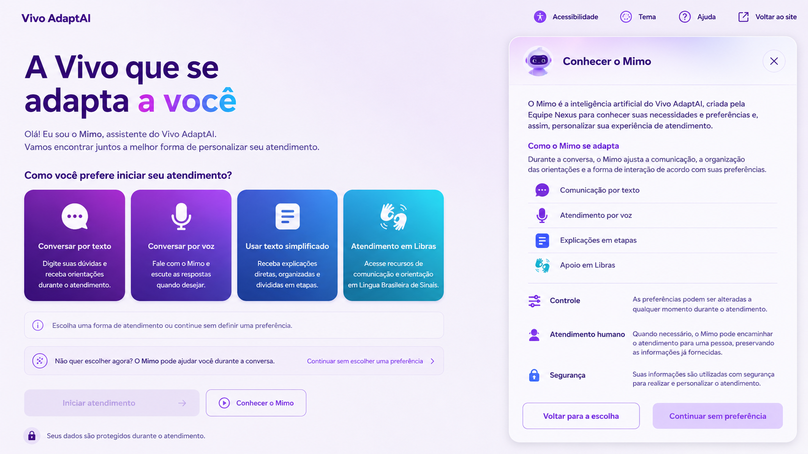
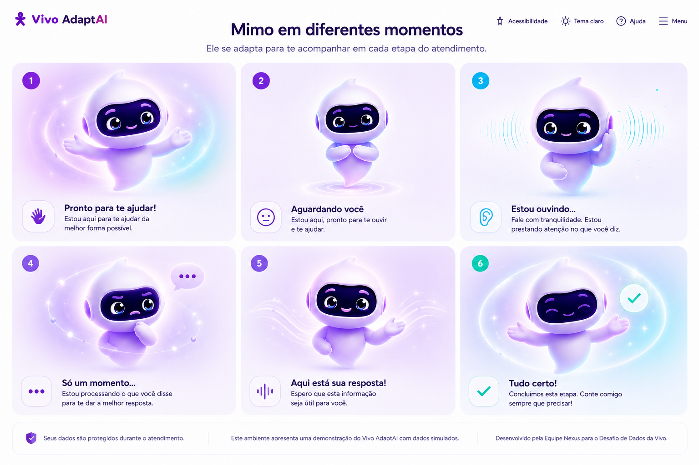

Linguagem técnica
Informações difíceis viram orientação clara e passo a passo.
Converse por texto ou escolha o modo que melhor se adapta a você.
Olá! Como posso ajudar você hoje?
Informações difíceis viram orientação clara e passo a passo.
Fluxos confusos são reorganizados por necessidade e contexto.
O atendimento respeita ritmo, leitura, fala e preferência visual.
O resumo mantém continuidade sem obrigar a pessoa a recomeçar.
Todos os modos têm o mesmo valor. Você pode trocar a modalidade durante a conversa.
A experiência é configurável sem parecer técnica. O usuário controla como quer ler, ouvir e navegar.
O produto preserva sentido e autonomia ao alternar entre texto, voz, Libras e explicação simplificada.
"Vou verificar sua conexão. Primeiro, confirme se as luzes do modem estão acesas."
Mimo traduz o atendimento em pequenos passos, confirma entendimento e usa estados visuais para comunicar o que está acontecendo.
Calmo, direto e acolhedor. Evita linguagem técnica desnecessária.
Repete decisões importantes para reduzir erro e ansiedade.
Não finge atendimento humano e informa quando está em modo demo.

Conhecer o Mimo
Adaptações do MimoO histórico pode ser salvo com consentimento. Para a demonstração, os dados são simulados localmente.
Escolha uma modalidade e envie uma mensagem para gerar um resumo do atendimento.
Indicadores simulados para acompanhar qualidade, acessibilidade e estabilidade da demonstração.
/health ao abrir.DEMO_MODE para respostas simuladas.